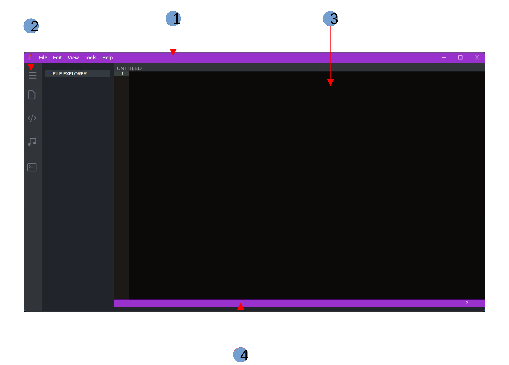
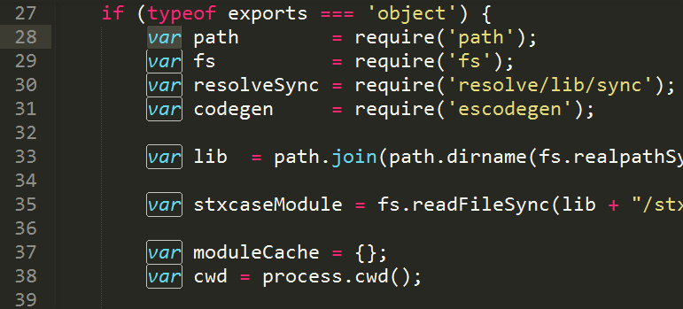
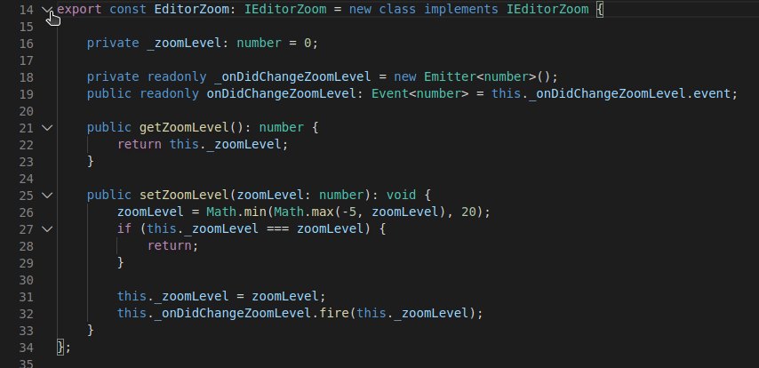
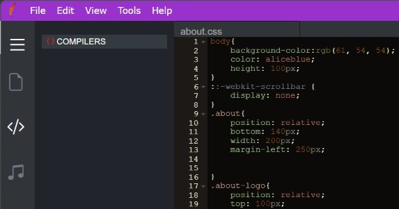
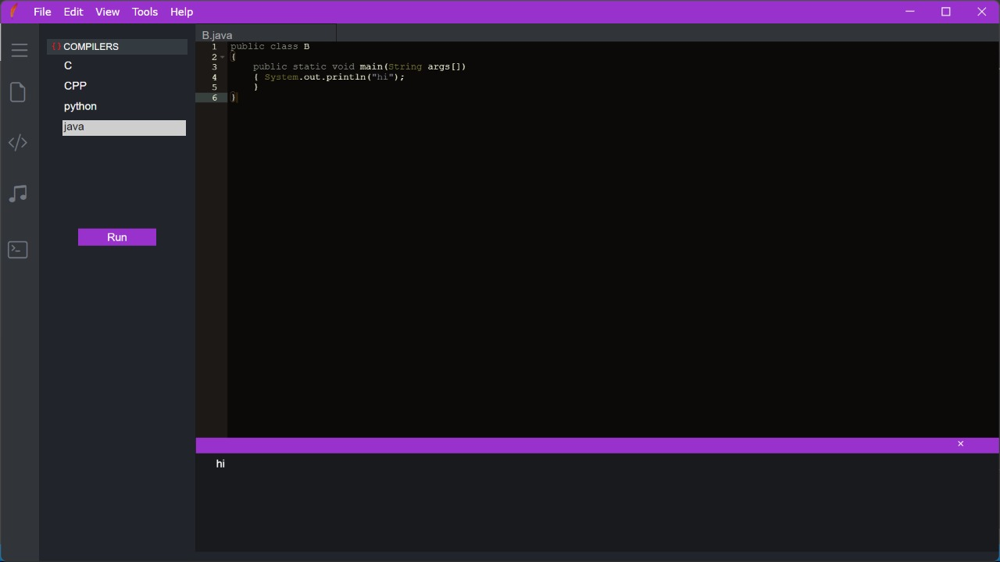
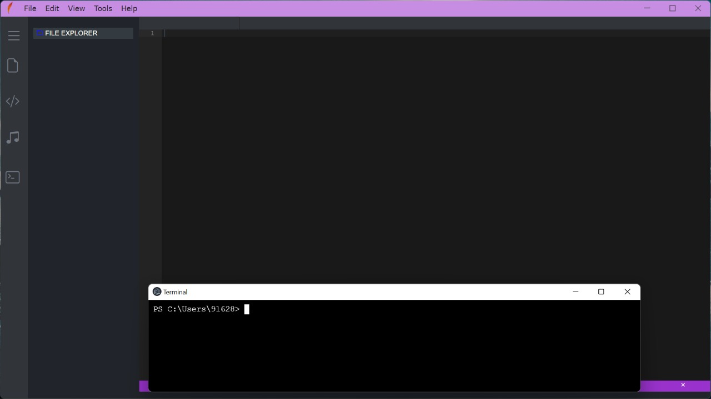
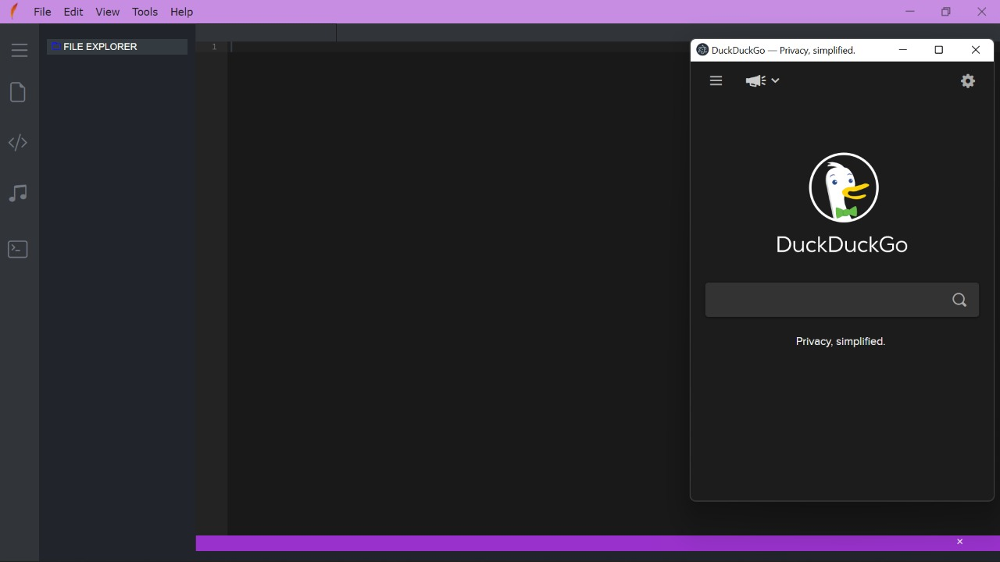
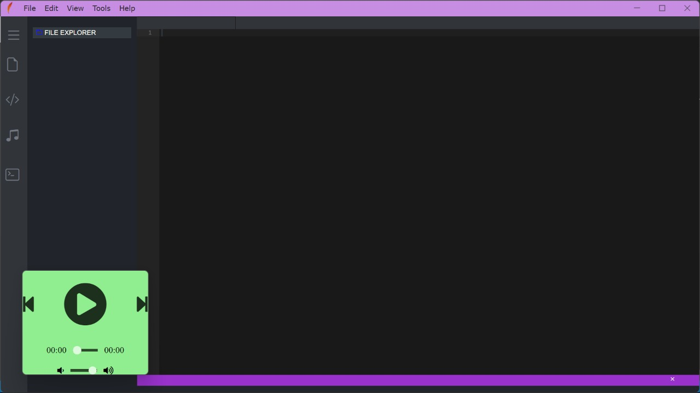

Getting started
Feather is a source code editor for use under Windows,Linux and Mac.
It supports around 80 programming languages with syntax highlighting and code folding.
It allows working with multiple open files in a single window.
Feather is available under GPL and distributed as free software.
Install Feather
- Download the installer file
- Run and Exicute the .exe file
Supported Programming Languages
| Languages | ||||
|---|---|---|---|---|
| Action Script | ADA | ASN.1 | APACHE_CONF | ASCIIDOC |
| AutoHotKey | BatchFile | C9Search | C_Cpp | Cirru |
| Cobol | coffee | ColdFusion | CSharp | CSS |
| D | Dart | Diff | Dockerfile | Dot |
| DummySyntax | Eiffel | EJS | Elixir | Elm |
| Forth | FTL | Gcode | Gherkin | Gitignore |
| golang | Groovy | HAML | Handlebars | Haskell |
| HTML | HTML_Ruby | INI | Io | Jack |
| Java | JavaScript | JSON | JSONiq | JSP |
| Julia | LaTeX | LESS | Liquid | Lisp |
| Python | Php | Perl | Ruby | Typescript |
| Vbscript | Xml |
USER INTERFACE
Layouts
- MenuBar menubar contains different operation like openfile,save etc. It includes all the menus for the app.
- ActivityBar Located on the far left-hand side, this lets you switch between views and gives you additional context-specific indicators,
- Editor The main area to edit your files. You can open different files and edit with syntax highlighting and code suggestion .
- ConsoleBar console popup area where result of the code shown below the consoleBar.
like the number of outgoing changes when Git is enabled.
USER GUIDE
Multiple selection
FEATHER supports multiple cursors for fast simultaneous edits. You can add secondary cursors (rendered thinner) withCtrl+Alt+Click . Each cursor operates independently based on the context it sits in. A common way to add more cursors is with Ctrl+Alt+Down or Ctrl+Alt+Up that insert cursors below or above.
Save/Save As
By default FEATHER requires an explicit action to save your changes to disk to existing file,Ctrl+s . But you want to save the code in new file then you can use save As by Ctrl+Shift+s or from the menu bar.
Find words
VS Code allows you to quickly find text and replace in the currently opened file. Press Ctrl+F to open the Find Widget in the editor, search results will be highlighted in the editor

Code folding
You can fold regions of source code using the folding icons on the gutter between line numbers and line start. Move the mouse over the gutter and click to fold and unfold regions.
source code written in a high-level language into a set of machine-language instructions that can be understood by a digital computer's CPU. FEATHER Compilers are very large programs, with error-checking and other abilities .Main feature of the Feather compilor is we get output without saving the file in simple way. FEATHER support mainly 4 compilors
- C
- C++
- PYTHON
- JAVA
STEP 1
click on the compilor icon(third icon) and click on the compior dropdown to show list of compilors.
STEP 2
select the compilor and press RUN button to show the results on bottom scrollup console.
The terminal gives you access to your computer's file and folder structure — the same way that you click through Finder or Explorer, you navigate using your keyboard in the terminal. It definitely takes some time getting used to, but developing your mental model in this area is foundational to working in code. press Ctrl+t or select from menubar tools >> Terminal or from left-ActivityBar
Feather has some special feature which it have integrated browser on it for surffing some code in internet. Browser can be opend using the shortcut Ctrl+Shift+b or select from menubar tools >> Browser
Music has the ability to bring us joy and comfort, to motivate us and to help us relax. It has the power to transport us back in time, to calm our worried minds or boost our moods. There really is a song for every emotion.Thereby , company can improve their productivity and also an enjoyment for the programmers. That's why FEATHER is also called programmers IDE. Music player can be launched using the shorcut Ctrl+Shift+m or select from menubar tools >> Music or from the left-ActivityBar You can play and pause music ,volume up and down etc supported .
